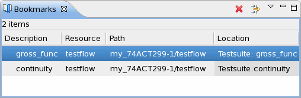

Bookmarks view
The Bookmarks view shows all the bookmarks created in the different Eclipse tools including the Testflow tool. The Resource column displays which tool the bookmarks apply to.

The following describes the usage of Bookmarks view with the Testflow Tool. You can use Bookmarks view with other Eclipse tool in the same way.
When the Testflow Tool is opened, double-clicking the desired bookmark in the Bookmarks view, you can quickly jump among the test suites. This helps you find particular branches, test blocks or just individual test suites in the whole testflow. Bookmarks can be exported to a XML file, and they can also be imported to a testflow from a XML file. So you can use different sets of bookmarks with one testflow, or use one set of bookmarks with several testflows that contain same test suites.
Functional changes
- Introduced before SmarTest 6.3.2